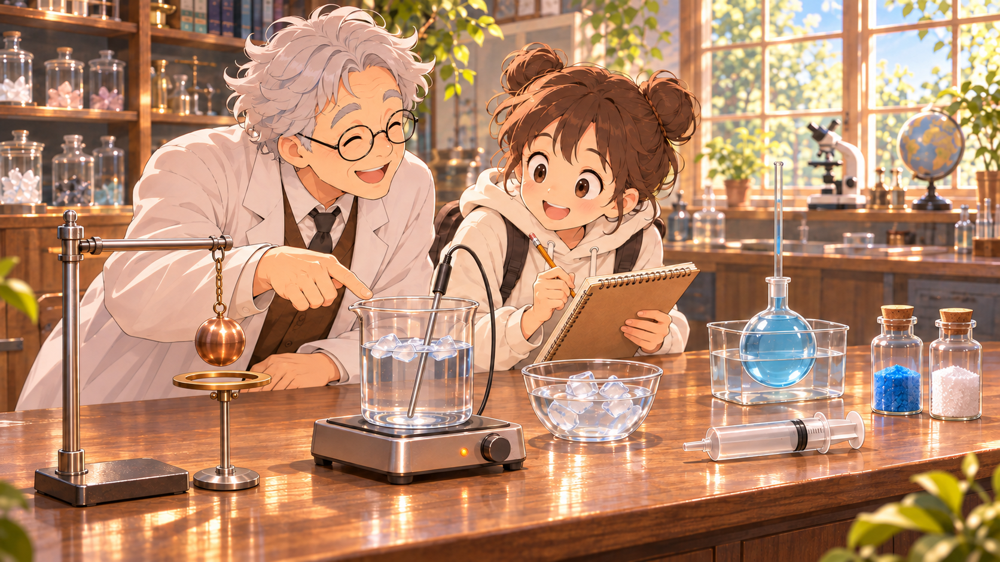

暖水浴・冰融化
- 外浴溫度
- 降低
- 杯內冰量
- 減少
- 熱傳方向
- 暖水 → 杯內樣品
冰吸熱，逐漸融化。
小葵原本以為，水吸收熱量，溫度就會升高。這次她和阿公一起觀察冰水，卻發現冰塊逐漸變小，讀值沒有明顯上升。他們決定追蹤熱傳進或傳出時，物質還會出現哪些變化。

正在準備互動器材。若未能載入，請重新整理；概念與來源仍可閱讀。
加熱歷程：狀態變化與溫度
冰塊變小的時候，溫度也會一起升高嗎？
我們可以邊加熱，邊把溫度記下來。
純水・正常大氣壓
開始沸騰時的水位
冰與水共存，準備觀察
此處放大融冰階段；完整圖維持固定尺度。
按「開始加熱」，一起觀察冰與曲線。
AI 器材示意・動畫已加速；吸熱量為模型計算值。忽略熱損失，停熱時保留狀態。
已觀察到：
在正常大氣壓下，純水的熔點與凝固點約為 0°C，沸點約為 100°C。壓力改變時，沸點也可能改變。
| 持續供熱的階段 | 狀態 | 溫度趨勢 |
|---|---|---|
| 低於熔點的冰 | 固態 | 升高 |
| 冰正在熔化 | 冰、水共存 | 約維持 0°C |
| 液態水 | 液態 | 升高 |
| 水正在沸騰 | 水、水蒸氣共存 | 約維持 100°C |
| 水蒸氣繼續受熱 | 氣態 | 可再升高 |
上方互動從冰水混合物開始，觀察至部分液態水汽化；不把逸出燒杯的蒸氣當成仍被同一探針量到。冰塊形狀、液面與器材比例為示意；水色與冰的輪廓用於協助辨識，虛線標記開始沸騰時的水位。各段以不同速度加速呈現，動畫長短不代表實際加熱時間；融冰局部圖的橫軸固定0～5,000 cal、縱軸−2～2°C；進入升溫後自動顯示完整曲線，也可隨時切換查看。完整圖的橫軸固定0～30,000 cal，縱軸保留−10°C的下緣空間，讓0°C水平段與橫軸分開，並不表示本段曾觀察到負溫。只畫已觀察的紀錄。模型忽略熱損失；停熱後模型保留當前狀態，不模擬散熱。常溫蒸發並不需要到 100°C。
狀態變化：吸熱與放熱的方向
剛才冰融化會吸熱，那水結成冰時，熱會往哪裡去？
我們可以把暖、冷兩種環境放在一起比較，看看冰量和溫度怎麼變。
選擇一種外浴，自由觀察
兩杯起初都是約 0°C 的冰水混合物。外浴固定量，只與杯內樣品交換熱量。
冰量 起初 50 g → 目前約 50 g
動畫為加速示意；兩種外浴的播放時間不可用來比較真實速率。
選擇外浴後，按「開始觀察」。
冰吸熱，逐漸融化。
水放熱，逐漸凝固。
正常大氣壓下，純水的冰與水共存時，樣品溫度維持約 0°C。
冷側使用預先降溫的20%食鹽水（質量百分濃度），初始約−10°C，再單獨作為外浴；比較期間沒有持續製冷，也沒有外浴冰塊融化的過程。杯內純水與外浴鹽水隔著杯壁，不混合。
兩側外浴各250g，杯內各50g冰與50g水。模型忽略室內、容器與探針的熱交換，假設每杯內部溫度均勻、不考慮過冷；外浴全程為液態。依外浴熱容量與能量守恆同步計算溫度、融冰及結冰，觀察結束時兩杯仍有冰、水共存。各例依自己的加速比例呈現，不代表兩例經過相同的實驗時間。器材為 AI 生成情境；比例、液面及冰塊形狀為示意，不作精確體積量測。冰量長條提供同尺度的前後比較。
水比熱約1 cal/(g·°C)，冰熔化潛熱約79.9 cal/g；20%鹽水以0.81 cal/(g·°C)作定比熱近似。ASHRAE鹽水物性表列其結晶起點約−16.5°C，支持本模型−10～−2°C維持液態；表中15°C比熱作教學近似，不當成此溫域的精密物性量測。這是依已知原理建立的教學模型，並非實測紀錄。
把觀察對象說清楚，再比較狀態變化與能量方向。
室溫環境持續供熱
準備觀察室溫蒸發。
| 吸熱方向 | 反向放熱 |
|---|---|
| 固態 → 液態：熔化 | 液態 → 固態：凝固 |
| 液態 → 氣態：汽化 | 氣態 → 液態：凝結 |
| 固態 → 氣態：昇華 | 氣態 → 固態：凝華 |
低於 0°C 的冷源可讓純水放熱結冰；冰水共存階段忽略過冷。室溫蒸發例由環境補充能量，非沸騰平台。水蒸氣看不見，圖中虛線僅表示汽化方向；白霧是小液滴。各例為加速、定性示意，不能用播放長短比較真實速率。
固體脹縮：同一金屬球的前後比較
剛才物質變成另一種狀態。如果一直是固體，受熱也會有變化嗎？
用同一個銅球試穿室溫的金屬環，再只改變球的溫度。
同樣的銅球・環維持 20°C
拖動銅球放入水浴，或拖到金屬環上測試。三顆球可以各自反覆使用。
選一顆銅球，拖入水浴，或拖到金屬環測試。
鍵盤操作：選取銅球後按 Enter，使用方向鍵移動，再按 Enter 放下；按 Esc 取消。
銅球受熱後仍是固體，但尺寸略增；冷卻後又縮回。熱膨脹不代表加入了新物質，也不表示粒子本身變大。
橋梁與路面預留伸縮縫，讓材料受熱膨脹時有空間。若整個金屬環均勻受熱，孔洞也會擴大；本活動固定環的溫度，避免同時改兩個條件。
本模型採銅的代表線膨脹係數約 17×10⁻⁶／°C；室溫球直徑 30 mm，孔徑 30.02 mm，80°C 球直徑約 30.031 mm。差異極小，畫面為器材示意，通過與否依直徑計算，尺寸差非常小。水浴調溫為加速示意；不計算膨脹公式。
液體與氣體的體積變化
金屬球會脹縮，那水和看不見的空氣呢？
各自保留相同的物質量，改變溫度後比較。水在接近結冰的溫度，還有特別的表現。
各自固定物質的量
調整水浴溫度，觀察液態水與空氣的變化。
比較細管液面與起初標記。
比較活塞與起初標記。
模型由 20°C 比較至 60°C，調溫動畫加速；液體顏色為示意，液面變化經放大，兩種圖像大小不可用來比較膨脹程度。
水：細管液面變化反映水與玻璃容器的相對膨脹。
空氣：空氣量固定、外壓近似不變時，受熱後體積增加，活塞向外移動。
以下比較相同質量的純水；體積為模型近似值。
液態水從 0°C 升到約 4°C，體積反而減少；約 4°C 時體積最小、密度最大。
100 g 的水結成 0°C 的冰，體積約為 109 mL。結冰是狀態變化，應和上面的液態水比較分開理解。
液體瓶中沒有封住的氣泡，細管上端開放；液柱變化反映水與玻璃容器的相對膨脹，第五區再解釋。氣體例固定空氣量，用低摩擦可動活塞使外壓近似不變；固定容器中的空氣受熱則主要表現為壓力增加。
液態水與空氣在各自控制的水浴中從 20°C 變到 60°C；圖像為示意，液面位移為放大呈現，體積是模型近似值。空氣的體積在 20°C 時設定為 100 mL，60°C 的值以近似定壓的理想氣體關係計算。模型忽略熱損失及氣體溶解等影響。
水與玻璃的相對膨脹
細管的液面升高了，可是玻璃瓶也一起受熱，它不會變大嗎？
把水增加的體積和容器增加的容量分開比較，看看最後多出多少。
固定 100 g 水・模型示意
調整溫度，比較液面與玻璃壁的位置。
位置差異已放大・不依比例。
20°C 起點：液面與玻璃壁位置重合。
固定 100 g 水；數值為模型估算，位置變化為示意。
這是水製簡易溫度計的原理示意，並非精密量測儀器；不同測溫液體有不同適用溫域。窄管讓體積差更容易看見，不代表憑空提高量測精度。
模型採水密度近似式、代表玻璃體積膨脹係數27×10⁻⁶／°C；三個增量共用同一體積單位。只比較熱平衡後狀態，不模擬玻璃先受熱時可能發生的液面暫降。細管液柱高度差為放大示意。本模型接近 5～6°C 時，水的膨脹非常小，與所選玻璃的相對變化可能使液面出現微小反向變化。
熱與化學變化：比較物質身分與能量方向
前面的冰變成水、銅球受熱變大，都還是原來的物質。反應前後會不會出現不同物質？
有可能。物質受熱後會發生化學反應，生成不同的新物質。
同一份藍色含水硫酸銅，受熱後會有什麼變化？
圖像為反應示意，並非實驗紀錄或操作指南；物質身分依已知反應資料確認，不能只憑顏色判斷。動畫時間經過縮短。
化學變化會生成不同物質；吸熱或放熱則描述能量方向。是否加熱、變色或冒泡，都不能單獨作為判斷依據。
融冰後仍是水，受熱膨脹的銅球仍是銅，這些沒有生成新物質。含水硫酸銅脫水與無水硫酸銅水合則生成不同物質；反應的能量方向要分開判斷。
本區為已知反應的定性示意，非實錄、非家用實驗操作指南；不以「需要加熱」判定所有反應都吸熱，也不把顏色變化單獨當作化學變化證據。
單元小測
閱讀每個觀察點的條件，選出解釋，最後一起核對。
換一組觀察，我能分清楚狀態、體積和物質身分的變化嗎？
觀察點 1／6
依教育部自然科學領綱 Bb-Ⅳ-5、Ab-Ⅳ-2、Ba-Ⅳ-3。圖像為本課原創器材與反應示意，不是實驗照片；數值為教學模型。各區就近說明固定條件、放大與加速限制。